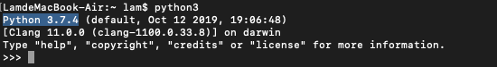

Tutorial for macOS
Install
- 安装 Homebrew
- 官方网站：https://brew.sh
- 安装方法：访问官方网站，复制代码
- 打开"终端"，将代码粘贴到终端，敲键盘回车键（enter/return）
- 按照提示操作即可，安装过程10到120分钟不等，视具体网络环境而定。
- 验证安装：“终端”输入命令：brew --version，若输出如下提示则安装成功
- 提示: ctrl + c 可强制中止命令
- 安装 Python3 和 pip3
- 终端输入命令：brew install python3，等待安装完成即可
- 验证安装：“终端”输入命令：python3，敲键盘回车键（enter/return）,若输出如下提示则安装成功

- 安装 Visual Studio Code
- 下载网址：https://code.visualstudio.com/Download
- 下载方法：访问下载网址，点击Mac小蓝块即可下载，如图
- 安装方法：打开"访达"，点击“应用程序”，把下载好的" Visual Studio Code "拖进“应用程序”即可，如图
- 配置Visual Studio Code：打开Visual Studio Code，点击Extensions,在搜索框输入“Chinese”,选择第一个，点击install，等待片刻，点击提示的restart即可，如图
- 同样地，搜索Python，选择第一个，点击install，等待片刻即可，如图
- 同样地，搜索Visual Studio IntelliCode ，选择第一个，点击install，等待片刻即可，如图
- 使用方法：
- 在任意位置，新建一个文件夹，然后将文件夹加入到Visual Studio Code（1.任意位置新建文件夹。2.文件 -- 打开 -- 选中文件夹 -- 确定）
- 新建文件（文件 -- 新建文件 -- 保存 -- 重命名（注意：必须以.py结尾）-- 选择保存路径 --存储）
- 实用技巧
- 运行程序（调试 -- 启动调试）（快捷键：fn + F5）
！！！今日重点
- 安装 Homebrew
- 安装 Python3 和 pip3
- 安装和配置 Visual Studio Code
- 新建文件夹并将文件夹加入到Visual Studio Code
- 新建python(后缀.py)文件，编程并运行程序，使控制台输出 Hello World，可参考下图
- 请点击这里了解更多详情：Visual Studio Code 之 Python 篇 官方文档
- Python官方文档：https://code.visualstudio.com/docs